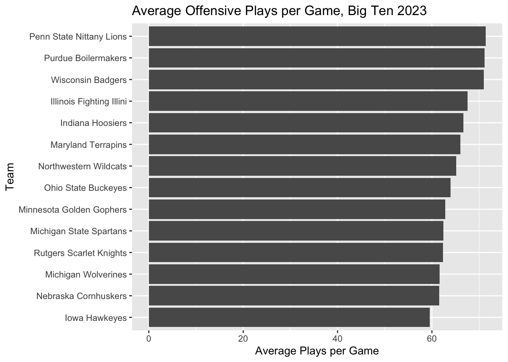
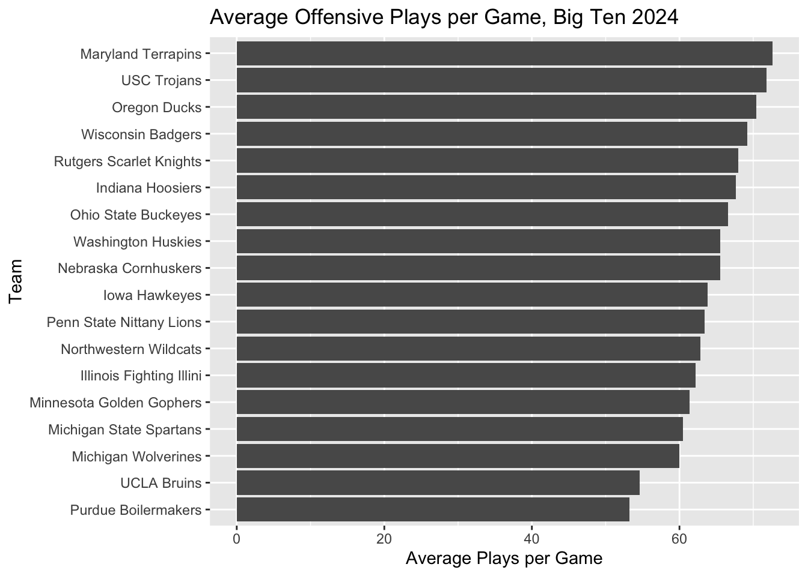

This is a post displaying the tempo of Big Ten Football teams from the 2023 and 2024 seasons. We will be exploring the number of plays called per game by each team to examine the clock stoppage rule changes across the NCAA.
Code
library(tidyverse)
── Attaching core tidyverse packages ──────────────────────── tidyverse 2.0.0 ──
✔ dplyr 1.1.4 ✔ readr 2.1.5
✔ forcats 1.0.0 ✔ stringr 1.5.1
✔ ggplot2 3.5.1 ✔ tibble 3.2.1
✔ lubridate 1.9.3 ✔ tidyr 1.3.1
✔ purrr 1.0.2
── Conflicts ────────────────────────────────────────── tidyverse_conflicts() ──
✖ dplyr::filter() masks stats::filter()
✖ dplyr::lag() masks stats::lag()
ℹ Use the conflicted package (<http://conflicted.r-lib.org/>) to force all conflicts to become errors
Rows: 1702 Columns: 54
── Column specification ────────────────────────────────────────────────────────
Delimiter: ","
chr (8): HomeAway, Opponent, Result, TeamFull, TeamURL, Outcome, Team, Con...
dbl (45): Game, PassingCmp, PassingAtt, PassingPct, PassingYds, PassingTD, ...
date (1): Date
ℹ Use `spec()` to retrieve the full column specification for this data.
ℹ Specify the column types or set `show_col_types = FALSE` to quiet this message.
Rows: 704 Columns: 54
── Column specification ────────────────────────────────────────────────────────
Delimiter: ","
chr (8): HomeAway, Opponent, Result, TeamFull, TeamURL, Outcome, Team, Con...
dbl (45): Game, PassingCmp, PassingAtt, PassingPct, PassingYds, PassingTD, ...
date (1): Date
ℹ Use `spec()` to retrieve the full column specification for this data.
ℹ Specify the column types or set `show_col_types = FALSE` to quiet this message.
Code
bigten23 <- footballlogs23 |>filter(Conference=="Big Ten Conference")bigten24 <- footballlogs24 |>filter(Conference=="Big Ten Conference")
avgplays23 |>ggplot() +geom_bar(data=avgplays23, aes(x=reorder(TeamFull,avgoffplays23), weight=avgoffplays23) ) +labs(title ="Average Offensive Plays per Game, Big Ten 2023",y ="Average Plays per Game",x ="Team" ) +coord_flip()

Last year, we see a pretty average spread, with teams running somewhere between 60 and 70 plays. There isn’t much correlation with success and plays ran though, as Michigan stands at the bottom, OSU in the middle, and PSU at the top. Let’s check out this year’s data:
avgplays24 |>ggplot() +geom_bar(data=avgplays24, aes(x=reorder(TeamFull,avgoffplays24), weight=avgoffplays24) ) +labs(title ="Average Offensive Plays per Game, Big Ten 2024",y ="Average Plays per Game",x ="Team" ) +coord_flip()

Some side notes: Aside from the evaluation of the play clock, a few things stand out. When it comes down to good vs. great, maybe less is more - Michigan has ran many fewer plays over than a lot of its peers over the past two years. Penn State (who ran the most plays in 2023) are clearly trying to chase their rival up north and has moved down to the middle of the pack. It has certainly worked for them through the first half of the season. This can also be a product of great offense - the more you score, the less plays you run.
In terms of the rule change affecting this year’s style of play, the majority of the teams (excluding Purdue) generally held pretty consistent in terms of how many plays they have run year-over-year. When it comes to overall success, the new rule doesn’t have much effect either because we see that great teams can run many plays or few plays and still be successful (again, Michigan at the bottom, OSU/PSU in the middle, and now Oregon at the top). The NCAA can try to change the rules, but they can’t seem to change how its teams play.